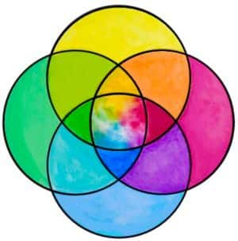

埃蒙加德环

同义词
Emmengard‘s Plural Rings
定义
埃蒙加德环（Emmengard's Plural Rings）是由埃蒙加德系统于 2019 年设计的图标，在多意识体社群得到广泛认可，并作为本站的头像。该图标以四个交叠圆环构成的维恩图样式呈现，最外环的每种颜色分别对应一种系统类型，重叠区域则代表混合型系统。
简介
埃蒙加德环（Emmengard's Plural Rings）由四个相交的环组成，其为多意识体最知名的且最具代表性的图案。
就个人设计角度来看，每一个环代表着一个人。他们互相交集，又彼此分离，体现了多意识体中“彼此不同，但是可以互相交集、了解”的情况。
这一设计体现了多意识体社区的包容理念，并试图减少医学标签在社区中一定程度上造成的分裂与排斥，让不同起源的系统能在同一面旗帜下得到包容或有归属感。
黄色环，代表未知型系统(Unknown)
代表尚不清楚自身起源的系统。可能是在未接触相关知识的情况下形成，或缺乏相关知识的系统。该类型通常不清楚自己应如何分类，或形成的过程，也可能是因记忆缺失等原因无法确认来源。
绿色环，代表适应型系统（Adaptive）
代表为应对创伤、压力或痛苦，或由于前述原因影响而形成的系统。
该术语取代了此前使用的 "traumagenic"（创伤型），因其过度强调创伤本身且字面上有歧义，且可能不适合症状较轻或不愿以创伤定义自身的系统。
红色环，代表创造型系统（Created）
表现为由长期进行创造行为而形成的系统，比如tulpa。通常来说，这一类系统有一个明显的从 单意识体 到 多意识体系统 的过程。
代表通过长期创造行为而形成的系统，常见的包括 tulpamancy、系魂（soulbonding）等。
这类系统通常有一个明显的从单意识体到多意识体的过程，其形成具有主动或半主动的性质。旧称 "parogenic" 亦归入此类。
蓝色环，代表自发型系统（Spontaneous）
代表既无创伤经历、也无创造行为，自然而然形成的系统。这类系统通常没有记忆缺失，其多元状态如同人格的自然分化，无需外部归因。
中间的相交混色部分，代表混合型系统（Mixed）
四个圆环的交叠区域以混色呈现，代表包含多种来源或难以单一归类的系统。有许多系统的成分是复杂的。
补充
“彩色的环和这些术语不局限于已经加入社区的人，也同样适用于那些还未找到自我的人，甚至是那些尚未出生的，未来社区的成员。”
“他们进入的社区将会是怎样的？”
“我希望这个社区充满了爱与支持，因为他们适应环境已经足够困难了。”
“在看这段话的人们，成为多意识体的人们，包括在社区外的系统们，无论他们是如何成为多意识体系统的，勇于了解自我，勇于直面痛苦，勇于追求美好，勇于探求未知，都是可歌可泣的。”
“难道多意识体的生活还不够艰难吗？”
“既然有创建一个社区的理由，那为什么不去做呢？”
“让我们共聚在一个屋檐下吧！让我们互相支持，互相理解吧！让我们共同进步吧！让我们共同追求美好的未来吧！”